ระบบงานองค์กร ใช้ง่ายทุกหน่วยงาน
iDevApp พัฒนาระบบเว็บสำหรับงานประจำขององค์กร ทั้งโรงพยาบาล หน่วยงานภาครัฐ และบริษัทเอกชน ตั้งแต่ทะเบียนครุภัณฑ์และงานซ่อม ระบบคิวรับบริการแสดงผลที่หน้าจอและผ่านมือถือ ข้อมูลลงเวลาทำงานและรายงานผลการทำงาน ไปจนถึงการนัดหมายล่วงหน้า
- ใช้ได้ทั้งโรงพยาบาล ภาครัฐ และบริษัทเอกชน
- I-Office ทดลองใช้ฟรี ไม่จำกัดเวลา
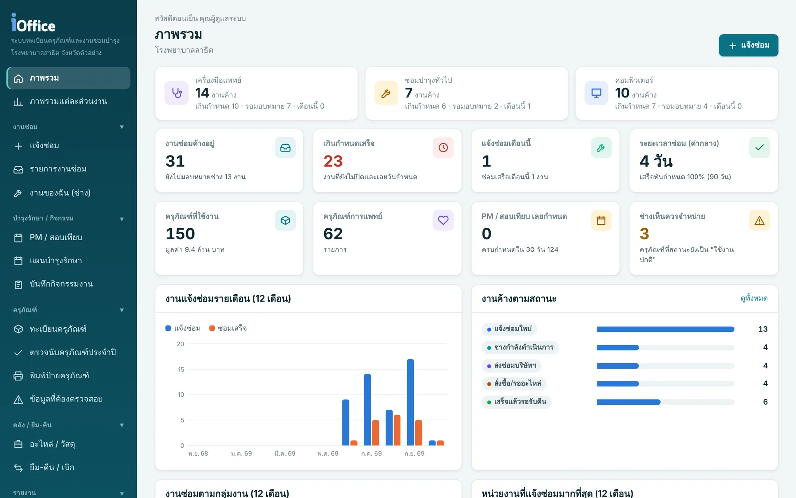
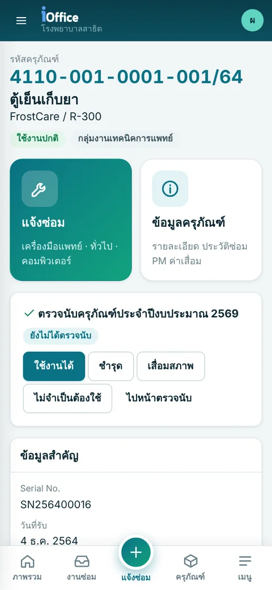
ระบบของ iDevApp
ทุกระบบใช้ได้ทั้งโรงพยาบาล หน่วยงานภาครัฐ และบริษัทเอกชน เลือกใช้ระบบเดียวหรือหลายระบบร่วมกันก็ได้
ครุภัณฑ์และงานซ่อม พัสดุ คลัง จัดซื้อจัดจ้าง บุคลากร การลา ลงเวลาด้วย GPS และสแกนหน้า สารบรรณ และระบบเหตุฉุกเฉิน รวมในระบบเดียว ส่งสรุปเวลาทำงานถึงบุคลากรทางอีเมลและ LINE OA
ลงเวลาเข้า-ออกงานจากมือถือด้วย GPS และรูปยืนยันตัวตน รวมกับข้อมูลจากเครื่องสแกนหน้า ZKTeco แล้วสรุปเวลาทำงาน สาย ขาด ลา ให้ฝ่ายบุคคล และส่งสรุปให้เจ้าตัวทางอีเมลและ LINE OA
ดูรายละเอียดกดปุ่ม SOS จากมือถือพร้อมพิกัด GPS แจ้งเหตุในองค์กรถึงทีมที่เกี่ยวข้อง แจ้งเตือนเข้า LINE และติดตามเหตุจากศูนย์สั่งการ
ดูรายละเอียดแจ้งเตือนคิวซักประวัติ พบแพทย์ และรับยาผ่าน LINE อัตโนมัติ ผู้รับบริการรู้ว่าเหลืออีกกี่คิว ไม่ต้องนั่งเฝ้าหน้าห้อง
ดูรายละเอียดจองนัดล่วงหน้าตามวันและช่วงเวลาที่ว่าง เจ้าหน้าที่จัดการตารางนัดและรายชื่อผู้มารับบริการได้ในที่เดียว
สอบถาม / ขอสาธิตง่ายขึ้นแค่มีคอมพิวเตอร์ กับ Wordpress
12 ปลั๊กอิน WordPress สำหรับ คลินิก ร้านแว่น และร้านขายยา ติดตั้งกับเว็บเดิมได้ทุกธีม ใช้ฟรีเกือบทั้งชุด
- นัดหมายแพทย์ออนไลน์ แบ่ง slot แจ้งเตือนทางอีเมล
- ลงทะเบียนผู้ป่วยใหม่ อ่านบัตรประชาชน/พาสปอร์ตบนมือถือ
- เชื่อม HOSxP ออก HN และบัตรคนไข้มี QR
- ตารางออกตรวจ ทีมแพทย์แยกตามสาขา
- คุกกี้ PDPA / GDPR พร้อมบันทึกความยินยอม
- เว็บสองภาษา TH/EN ไม่ต้องทำหน้าซ้ำ
- แผนที่และปุ่มนำทาง ไม่ต้องใช้ API key
- ประกาศ Popup ไฟล์แนบ แผนผังองค์กร
จ่ายครั้งเดียว รวมติดตั้งและดูแลแก้ปัญหาฟรี 1 ปี · ไม่รวม Payment Gateway · ปลั๊กอินเว็บไซต์อีก 9 ตัวใช้ฟรี
ลงเวลาจากมือถือ เชื่อถือได้ ไม่ต้องรอคิวสแกน
บุคลากรลงเวลาเข้า-ออกงานผ่านมือถือ ระบบตรวจตำแหน่งกับจุดลงเวลาและให้ถ่ายรูปยืนยันตัวตน ฝ่ายบุคคลได้สรุปเวลาทำงานทันทีโดยไม่ต้องรวบรวมเอง
- ตรวจพิกัด GPS กับจุดลงเวลาและรัศมีที่กำหนด ถ้าอยู่นอกพื้นที่ ตั้งได้ว่าจะให้ระบุเหตุผล (เช่น ออกหน่วย เยี่ยมบ้าน) หรือไม่ให้ลงเวลา
- ถ่ายรูปจากกล้องในหน้าลงเวลาเท่านั้น ใช้รูปเก่าหรือรูปซ้ำไม่ได้
- ตรวจจับแอปจำลองตำแหน่ง พิกัดกระโดด และเวลาในเครื่องที่ไม่ตรง
- ใช้ร่วมกับเครื่องสแกนใบหน้า ZKTeco ได้ ลงทะเบียนครั้งเดียว สแกนได้ทุกเครื่องทุกสาขา ข้อมูลรวมเป็นรายงานเดียวกับการลงเวลาด้วย GPS
- ส่งรายงานสรุปการเข้า-ออกงานให้บุคลากรแต่ละคนทางอีเมลและ LINE OA เจ้าตัวตรวจสอบเวลาของตัวเองได้ ไม่ต้องรอถามฝ่ายบุคคล
- ตารางเวร กะข้ามวัน สรุปสาย ออกก่อน ขาด และคำขอแก้ไขเวลาผ่านสายอนุมัติ ส่งออก Excel ได้
- ตั้งระยะเก็บรูปและพิกัดตาม PDPA ได้ ครบกำหนดระบบลบให้อัตโนมัติ
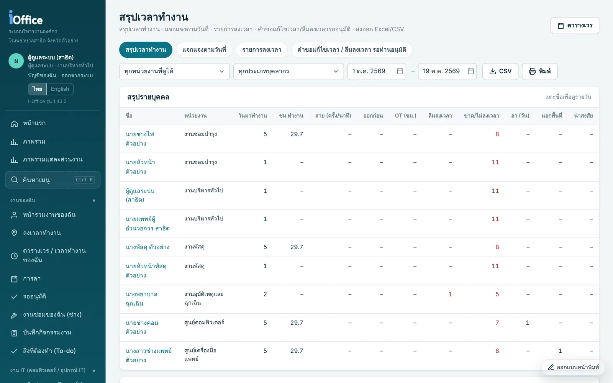
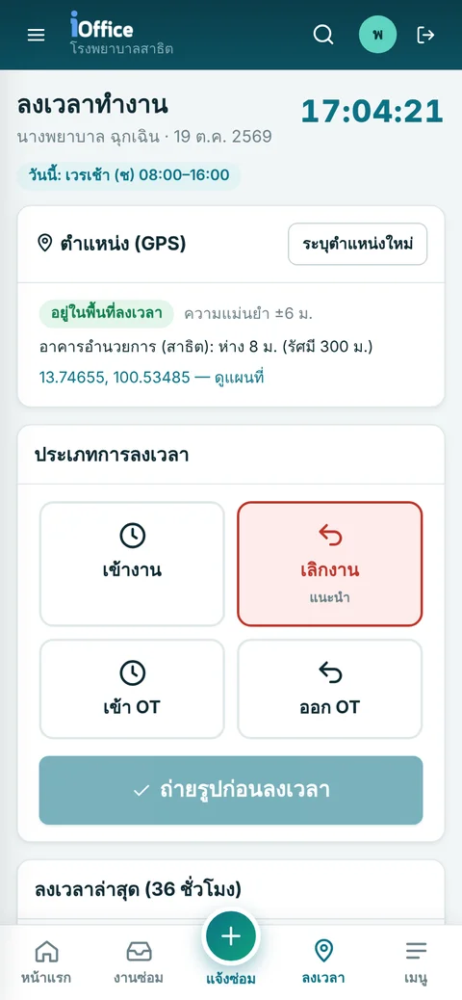
แจ้งเหตุได้ในปุ่มเดียว ทีมรู้ทันที ติดตามได้จนจบเหตุ
ตั้งแต่บุคลากรกดขอความช่วยเหลือจากมือถือ การประกาศเหตุในองค์กร ไปจนถึงการสั่งการและติดตามรถจากศูนย์สั่งการ ทุกคนที่เกี่ยวข้องได้รับแจ้งพร้อมกัน และเห็นสถานะเดียวกัน
กดครั้งเดียว ส่งชื่อ หน่วยงาน และพิกัด GPS ล่าสุดพร้อมลิงก์แผนที่ ให้ทีมรับแจ้งทันที
ประกาศไฟไหม้ เหตุรุนแรง การอพยพ หรือ Code Blue ในโรงพยาบาล แจ้งเตือนเฉพาะทีมที่เกี่ยวข้องพร้อมจุดเกิดเหตุ
รับแจ้ง สั่งการรถพยาบาลหรือทีมเผชิญเหตุ และติดตามสถานะรถและเหตุการณ์บนแผนที่จากหน้าจอเดียว
ส่งข้อความเตือนเข้ากลุ่ม LINE ทันทีที่มีเหตุ พร้อมรายละเอียดและลิงก์เปิดดูในระบบ
ห้องควบคุมเหตุการณ์และการอพยพ
เมื่อต้องอพยพ ระบบใช้ข้อมูลลงเวลาล่าสุดจาก I-Work หาว่าใครยังอยู่ในพื้นที่เกิดเหตุ ให้ทุกคนยืนยันความปลอดภัยจากมือถือ ผู้ควบคุมเห็นภาพรวมและรายชื่อที่เรียงตามความเร่งด่วน
- รองรับไฟไหม้ น้ำท่วม แผ่นดินไหว สารเคมีรั่ว เหตุรุนแรง และการอพยพ
- คนที่ขอความช่วยเหลือขึ้นบนสุด พร้อมพิกัด GPS ล่าสุดและลิงก์แผนที่
- ผู้ควบคุมบันทึก "พบตัว / ปลอดภัย" แทนได้ หน้าจอรีเฟรชเองทุก 15 วินาที
- พิมพ์รายชื่อได้ และเก็บประวัติทุกเหตุการณ์ไว้ทบทวนหลังซ้อมแผน
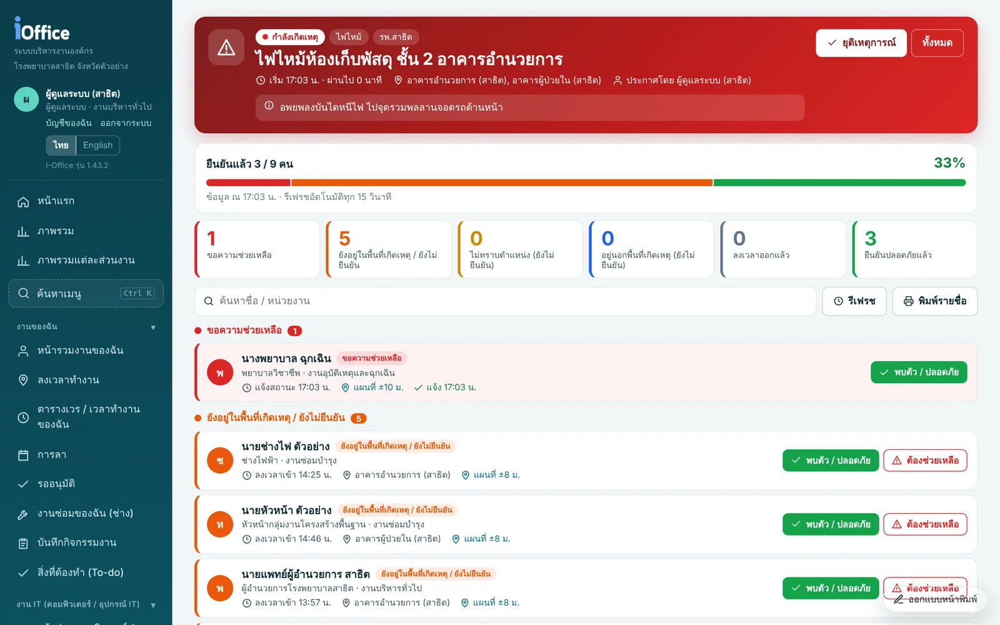
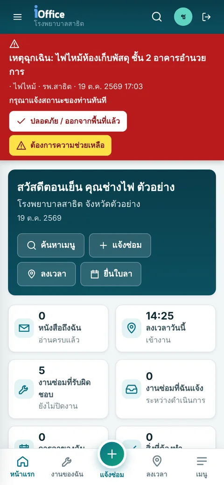
รู้คิวทุกจุดผ่าน LINE ไม่ต้องนั่งเฝ้าหน้าห้อง
ผู้รับบริการพิมพ์เลขคิวใน LINE ของหน่วยงานครั้งเดียว ระบบติดตามให้ตั้งแต่ซักประวัติ พบแพทย์ จนถึงรับยา และแจ้งเตือนเองเมื่อใกล้ถึงคิว ลดความแออัดหน้าห้องตรวจและห้องยา
- ใช้ผ่าน LINE Official Account ของหน่วยงาน ผู้รับบริการไม่ต้องลงแอปเพิ่ม
- ลงทะเบียนครั้งแรกด้วยเลขบัตรประชาชน 13 หลัก ครั้งต่อไปพิมพ์แค่เลขคิว
- ติดตามต่อเนื่องทุกจุด ทั้งซักประวัติ พบแพทย์ และรับยา ในการพิมพ์ครั้งเดียว
- แจ้งเตือนอัตโนมัติเมื่อเหลือ 10 คิว 5 คิว และเมื่อถึงคิว พร้อมบอกจุดบริการที่ต้องไป
- การ์ดแจ้งเตือนแยกสีตามประเภทคิว อ่านง่าย ผู้สูงอายุก็ดูเข้าใจ
- แสดงคิวบนจอที่จุดบริการ และมีแดชบอร์ดให้ผู้ดูแลติดตามการใช้งาน
- M025 รอ
- M026 รอ
- M027 รอ
- M028 รอ
พบแพทย์ · ห้องตรวจอายุรกรรม 6
เลขคิว M024 · เหลืออีก 2 คิว
เตือนเมื่อเหลือ 5 คิว และเมื่อถึงคิว พร้อมบอกโต๊ะซักประวัติ
เตือนเมื่อเหลือ 10 คิว 5 คิว และเมื่อถึงคิว พร้อมบอกห้องตรวจ
เตือนเมื่อเหลือ 5 คิว และเมื่อถึงคิว พร้อมบอกช่องจ่ายยา
จากโรงพยาบาล สู่ธุรกิจของคุณ
ประสบการณ์ทำระบบงานให้โรงพยาบาลและองค์กร กำลังถูกย่อให้พอดีกับคลินิก ร้านยา และร้านอาหาร ใช้ง่าย เริ่มได้ไว ไม่ต้องมีทีม IT
คลินิกเล็ก ระบบไม่เล็ก
นัดหมาย คิวหน้าห้อง เวชระเบียน จนถึงจ่ายยาและออกใบเสร็จ จบในหน้าจอเดียว ให้หมอได้โฟกัสที่คนไข้
แจ้งฉันเมื่อเปิดตัวรู้ทุกเม็ด ทุกล็อต ทุกวันหมดอายุ
ขายหน้าร้าน สต็อกยาแยกล็อต เตือนยาใกล้หมดอายุและของใกล้หมด ร้านยาเล็กก็บริหารสต็อกได้แบบมืออาชีพ
แจ้งฉันเมื่อเปิดตัวลูกค้าสั่งเอง ครัวได้ทันที
สแกน QR ที่โต๊ะสั่งอาหาร ออเดอร์เด้งเข้าครัว เช็กบิลไว ปิดร้านแล้วรู้ยอดขายทันที ลดคิวและลดสั่งผิด
แจ้งฉันเมื่อเปิดตัว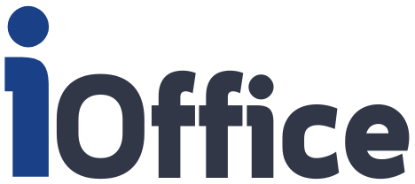
ระบบบริหารงานองค์กร ครบทุกงานหลังบ้าน
I-Office รวมงานครุภัณฑ์ ซ่อมบำรุง พัสดุ บุคลากร ลงเวลา และงานสำนักงานไว้ในระบบเดียว ใช้ได้ทั้งโรงพยาบาล หน่วยงานภาครัฐ และบริษัทเอกชน ผ่าน browser ทั้งคอมพิวเตอร์และมือถือ
ทุกงานหลังบ้าน ทำงานเชื่อมกันในระบบเดียว
งานซ่อม PM ยืม-คืน และการตรวจนับผูกกับครุภัณฑ์ตัวเดียวกัน ส่วนงานบุคลากร ลงเวลา และการลา ผูกกับผู้ใช้คนเดียวกัน ดูประวัติทั้งหมดได้ในหน้าเดียว
ทะเบียนครุภัณฑ์
รหัสครุภัณฑ์ตามหมวด FSN ระบบออกเลขให้อัตโนมัติ รองรับเลข GF (GFMIS) แหล่งเงิน วิธีได้มา ผู้ขาย และการรับประกัน
แจ้งซ่อมและติดตามงาน
แจ้งซ่อมจากหน่วยงานหรือสแกน QR มอบหมายช่าง ติดตามสถานะ บันทึกผลและอะไหล่ที่ใช้ แล้วพิมพ์ใบส่งซ่อมได้ทันที
PM และสอบเทียบ
วางแผนบำรุงรักษารายเดือน รายไตรมาส หรือรายปี ระบบเตือนเมื่อใกล้ครบกำหนด และเก็บผลตรวจเช็กทุกครั้ง
พิมพ์ป้าย QR
ออกแบบป้ายได้เอง เลือกขนาดสติกเกอร์ ข้อมูลที่จะแสดง และสีหัวป้าย แล้วสแกนป้ายเพื่อแจ้งซ่อมหรือดูประวัติเครื่องได้เลย
ตรวจนับประจำปีด้วยมือถือ
กรรมการสแกนป้ายหรือติ๊กในรายการ เห็นความคืบหน้าแบบเรียลไทม์ แล้วพิมพ์รายงานผลพร้อมลงนามอิเล็กทรอนิกส์
ค่าเสื่อมราคาและรายงาน
ตั้งนโยบายค่าเสื่อมได้ตามต้องการ ดูรายงานทะเบียนครุภัณฑ์และสถิติงานซ่อม แล้วส่งออกเป็น Excel หรือ CSV
ยืม-คืน และคลังอะไหล่
ยืม-คืนอุปกรณ์ เบิกวัสดุ บันทึกรับเข้าและคงเหลือของอะไหล่ ระบบเตือนเมื่อของต่ำกว่าจุดสั่งซื้อ
ลายเซ็นอิเล็กทรอนิกส์
ผู้ใช้วาดลายเซ็นเก็บไว้ในระบบ แล้วลงนามในใบส่งซ่อม ใบเบิก และรายงานผลได้โดยไม่ต้องพิมพ์ออกมาเซ็น
หลายสาขาในระบบเดียว
แยกข้อมูลของสำนักงานใหญ่ สาขา หรือหน่วยบริการย่อย ส่วนผู้ใช้ส่วนกลางดูภาพรวมทุกสาขาได้
ลงเวลา GPS และสแกนหน้า
ลงเวลาผ่านมือถือพร้อมพิกัดและรูปยืนยันตัวตน หรือใช้เครื่องสแกนหน้า ZKTeco ส่งสรุปการเข้า-ออกงานถึงเจ้าตัวทางอีเมลและ LINE OA
บุคลากรและการลา
ข้อมูลบุคลากร ตารางเวร ยื่นใบลาจากมือถือ และอนุมัติตามสายบังคับบัญชา เห็นวันลาคงเหลือได้ทันที
งานสำนักงาน
สารบรรณรับ-ส่งหนังสือ ขอใช้รถ และจองห้องประชุม พร้อมแจ้งเตือนผู้เกี่ยวข้องทาง LINE OA และอีเมล
ใช้ง่าย ตั้งแต่ฝ่ายพัสดุจนถึงช่างหน้างาน
หน้าจอทั้งหมดถ่ายจากระบบสาธิตที่ใช้ข้อมูลสมมติ
ค้นหาครุภัณฑ์ได้ในไม่กี่วินาที
ค้นได้ทั้งเลขครุภัณฑ์ เลข GF ชื่อ และ Serial กรองตามหน่วยงาน ประเภท สถานะ หรือแหล่งเงิน แล้วพิมพ์ป้ายหรือส่งออกได้จากหน้าเดียว
- นำเข้าข้อมูลเดิมจาก Excel / CSV ได้ ระบบตรวจทุกแถวและให้ดูตัวอย่างก่อนบันทึก
- มีรายการที่ต้องตรวจสอบ ช่วยหาข้อมูลที่ยังไม่ครบหรือผิดปกติ
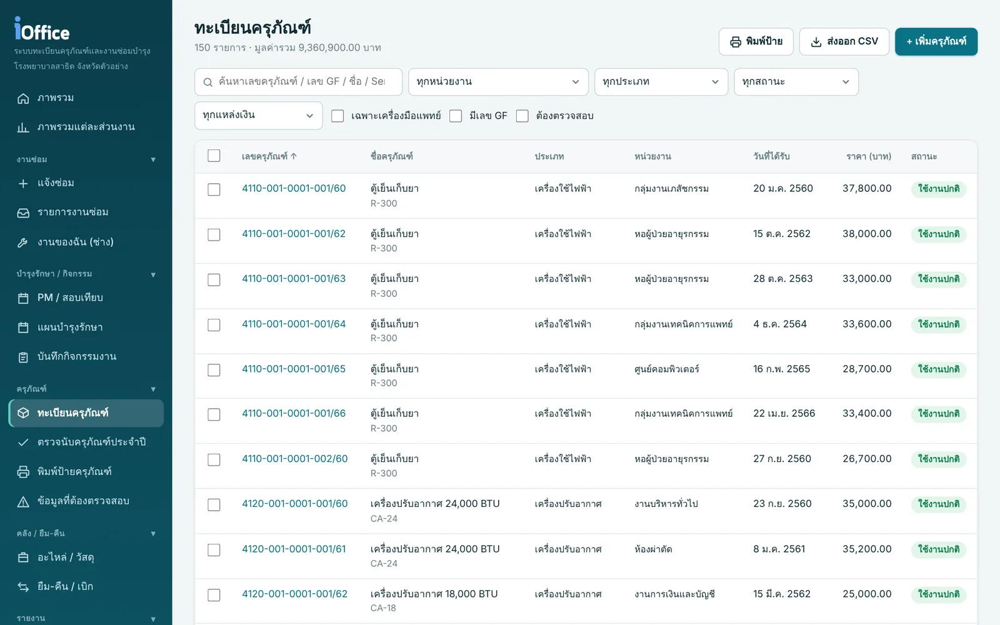
เห็นทุกขั้นตอนของงานซ่อม
ทุกใบแจ้งซ่อมมีไทม์ไลน์ ผู้รับผิดชอบ กำหนดเสร็จ และอะไหล่ที่ใช้ ระบบเตือนเมื่อเครื่องเดิมถูกแจ้งซ่อมซ้ำบ่อย
- พิมพ์ใบส่งซ่อม ใบรายงานผล และใบขอเบิกอะไหล่ พร้อมลายเซ็นอิเล็กทรอนิกส์
- มีแดชบอร์ดแยกตามส่วนงาน และหน้า "งานของฉัน" สำหรับช่าง
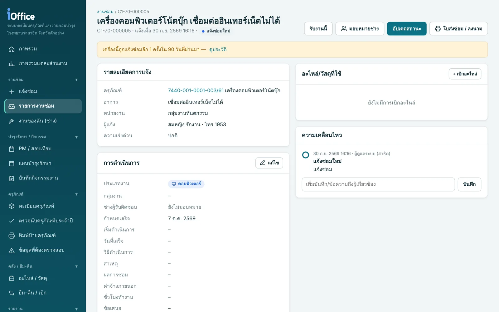
สแกนป้ายเดียว ได้ทั้งแจ้งซ่อมและตรวจนับ
พิมพ์ป้ายลงสติกเกอร์ A4 หรือเครื่องพิมพ์ฉลาก เมื่อสแกน QR บนป้าย จะเปิดหน้าของเครื่องนั้นทันที เลือกแจ้งซ่อม ดูข้อมูล หรือบันทึกผลตรวจนับได้เลย
- เลือกข้อมูลบนป้าย ขนาดตัวอักษร และสีหัวป้ายได้เอง
- ใช้กล้องมือถือสแกนได้เลย ไม่ต้องลงแอปเพิ่ม
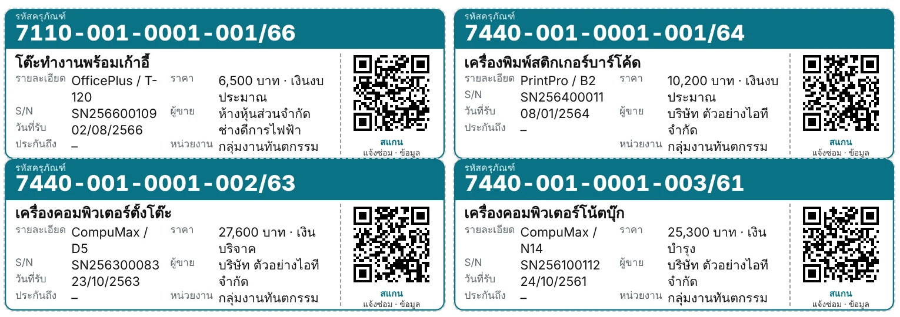
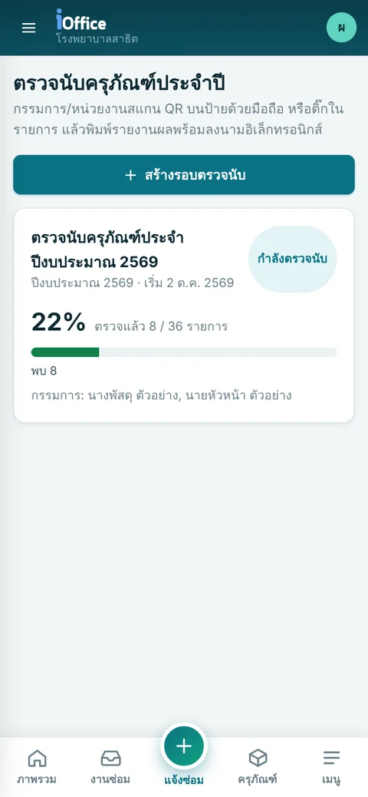
แต่ละทีมเห็นเฉพาะงานของตัวเอง
แต่ละส่วนงานมีเมนูและแดชบอร์ดของตัวเอง และกำหนดสิทธิ์ตามบทบาทได้ละเอียดถึงระดับเมนู
เครื่องมือแพทย์
PM สอบเทียบ ระดับความเสี่ยง และประวัติซ่อม
คอมพิวเตอร์
แผนบำรุงรักษาอุปกรณ์ IT และงานซ่อมคอมพิวเตอร์
ซ่อมบำรุงทั่วไป
ไฟฟ้า ประปา แอร์ และอาคาร พร้อมบันทึกกิจกรรมประจำวัน
พัสดุ
ทะเบียน รับเข้า จำหน่าย ค่าเสื่อม และตรวจนับประจำปี
ติดตั้งเสร็จได้ในวันเดียว
สคริปต์ติดตั้งเตรียมให้ครบ ทั้งฐานข้อมูล การเปิดระบบอัตโนมัติ และการสำรองข้อมูลทุกคืน
ติดตั้งบน server
รันสคริปต์เพียงคำสั่งเดียว ติดตั้งได้แม้ server ไม่มีอินเทอร์เน็ต
ตั้งค่าผ่านตัวช่วย
กรอกชื่อหน่วยงาน สาขา โลโก้ และหน่วยงานช่าง/พัสดุ ทีละขั้น
นำเข้าข้อมูลเดิม
ดาวน์โหลดแม่แบบ Excel กรอกแล้วอัปโหลด ระบบตรวจสอบให้ก่อนบันทึก
พิมพ์ป้าย แล้วเริ่มใช้
ติดป้าย QR ที่เครื่อง ทุกหน่วยงานแจ้งซ่อมผ่านมือถือได้ทันที
เริ่มใช้ฟรี ขยายเมื่อพร้อม
ทดลองใช้ระบบหลักได้โดยไม่จำกัดเวลา เมื่อพร้อมใช้งานจริงเลือกรุ่นที่ตรงกับงานขององค์กร หรือเพิ่มเฉพาะโมดูลที่ต้องการ ใช้ได้ทั้งโรงพยาบาล ภาครัฐ และเอกชน
รุ่นทดลองใช้
ทดลองระบบหลัก หรือใช้ในหน่วยงานขนาดเล็ก
- ทะเบียนครุภัณฑ์ ป้าย QR งานซ่อม PM / สอบเทียบ สัญญา MA ตรวจนับ อะไหล่ คลัง ยืม-คืน จองห้องประชุม
- ครุภัณฑ์ไม่เกิน 300 รายการ · 1 สาขา · ผู้ใช้ 20 บัญชี
- มีระบบสาธิตพร้อมข้อมูลตัวอย่าง
- ใช้ได้เฉพาะรุ่นโปรแกรมที่ติดตั้ง อัปเดตไม่ได้
License ตามรุ่น
เลือกรุ่นที่ตรงกับงาน แล้วเพิ่มโมดูลได้ภายหลัง
- รุ่นมาตรฐาน งานพัสดุและซ่อมบำรุง ไม่จำกัดครุภัณฑ์ สาขา และผู้ใช้
- รุ่นงานสำนักงาน บุคลากร การลา ลงเวลาด้วย GPS และสแกนหน้า ZKTeco ส่งสรุปเวลาทางอีเมลและ LINE OA เหตุฉุกเฉิน สารบรรณ ขอใช้รถ
- รุ่นเต็ม ทุกโมดูล หรือเลือกเพิ่มเฉพาะโมดูลที่ต้องการ
- อัปเดตรุ่นใหม่ได้ตลอดอายุ license ผู้ดูแลกดอัปเดตหรือตั้งเวลาได้จากหน้าเว็บ
- license หมดอายุแล้วยังใช้งานต่อได้ตามปกติ
มีคำถาม? เราตอบไว้ให้แล้ว
ข้อมูลของหน่วยงานเก็บไว้ที่ไหน?
ข้อมูลทั้งหมดเก็บอยู่บน server ของหน่วยงานเอง ไม่ได้ฝากไว้บนคลาวด์ของผู้พัฒนา ระบบสำรองฐานข้อมูลให้อัตโนมัติทุกคืนและเก็บย้อนหลัง 30 วัน
ต้องใช้ server แบบไหน?
ใช้เครื่อง Windows 10/11, Windows Server 2016 ขึ้นไป หรือ Linux (AlmaLinux / Rocky / RHEL หรือใช้ Docker) ก็ได้ ระบบใช้ Node.js และ PostgreSQL ซึ่งสคริปต์ติดตั้งจะลงให้เอง
มีข้อมูลเดิมใน Excel หรือโปรแกรมเก่า ย้ายมาได้ไหม?
ได้ครับ ใช้เมนูนำเข้าข้อมูล ดาวน์โหลดแม่แบบของหน่วยงาน ครุภัณฑ์ ผู้ใช้ และอะไหล่ กรอกแล้วอัปโหลด ระบบตรวจทุกแถวและให้ดูตัวอย่างก่อนบันทึกจริง
ใช้งานนอกสำนักงานหรือบนมือถือได้ไหม?
ใช้บนมือถือผ่าน browser ได้ทันที ถ้าต้องการเข้าจากภายนอก ตั้ง Cloudflare Tunnel ได้ด้วยสคริปต์ที่มีให้ ไม่ต้องเปิดพอร์ตบน firewall
ถ้า license หมดอายุจะเป็นอย่างไร?
ใช้งานต่อได้ตามปกติ ข้อมูลอยู่ครบ เพียงแต่อัปเดตเป็นรุ่นใหม่ไม่ได้จนกว่าจะต่ออายุ
ลงเวลาด้วย GPS ป้องกันการลงเวลาแทนกันได้อย่างไร?
ต้องถ่ายรูปจากกล้องในหน้าลงเวลาทุกครั้ง ใช้รูปเก่าหรือรูปซ้ำไม่ได้ ระบบตรวจตำแหน่งกับจุดลงเวลา และตรวจจับแอปจำลองตำแหน่ง พิกัดที่กระโดดผิดปกติ และเวลาในเครื่องที่ไม่ตรง รายการที่น่าสงสัยจะถูกทำเครื่องหมายให้หัวหน้าตรวจสอบ
ระบบอื่นนอกจาก I-Office ขอดูได้ไหม?
ได้ครับ I-Work, I-SOS, I-Queue และ I-Appointment ติดต่อขอรายละเอียดหรือนัดสาธิตได้ทางอีเมล ระบุระบบที่สนใจและลักษณะงานของหน่วยงานมาด้วย
ทดลองใช้ I-Office ต้องทำอย่างไร?
ส่งอีเมลขอไฟล์ติดตั้ง แล้วติดตั้งแบบระบบสาธิต (Demo) ได้เลย ระบบจะสร้างโรงพยาบาลตัวอย่างพร้อมข้อมูลสมมติและบัญชีทดลองครบทุกบทบาท
อยากเห็นระบบทำงานจริง?
ขอไฟล์ติดตั้ง I-Office ขอใบเสนอราคา หรือนัดสาธิตระบบใดก็ได้ ส่งอีเมลมาได้เลย ระบุชื่อหน่วยงานหรือบริษัท และระบบที่สนใจ